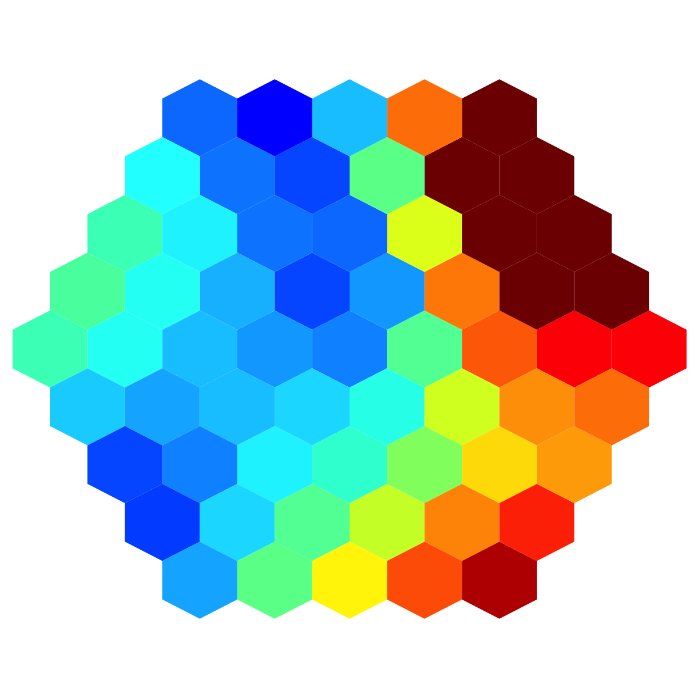

visHexComp is supposed to visualise a
supra-hexagonal grid in the context of viewport
visHexComp(sMap, comp, margin = rep(0.6, 4), area.size = 1, colormap = c("bwr", "jet",
"gbr", "wyr", "br", "yr", "rainbow", "wb"), ncolors = 40, zlim = c(0, 1), border.color = "transparent",
newpage = T)
invisible
none
# 1) generate an iid normal random matrix of 100x10 data <- matrix( rnorm(100*10,mean=0,sd=1), nrow=100, ncol=10) colnames(data) <- paste(rep('S',10), seq(1:10), sep="") # 2) sMap resulted from using by default setup sMap <- sPipeline(data=data)Start at 2014-03-21 17:53:31 First, define topology of a map grid... Second, initialise the codebook matrix given a topology and input data... Third, get training at the rough stage... Fourth, get training at the finetune stage... Next, identify the best-matching hexagon/rectangle for the input data... Finally, append the response data (hits and mqe) into the sMap object... Below are the summaries of the training results: dimension of input data: 100x10 xy-dimension of map grid: xdim=9, ydim=9 grid lattice: hexa grid shape: suprahex dimension of grid coord: 61x2 initialisation method: linear dimension of codebook matrix: 61x10 mean quantization error: 4.99648965384613 Below are the details of trainology: training algorithm: batch alpha type: invert training neighborhood kernel: gaussian trainlength (x input data length): 7 at rough stage; 25 at finetune stage radius (at rough stage): from 3 to 1 radius (at finetune stage): from 1 to 1 End at 2014-03-21 17:53:32 Runtime in total is: 1 secs# 3) visualise the first component plane with a supra-hexagonal grid visHexComp(sMap, comp=sMap$codebook[,1], colormap="jet", ncolors=100, zlim=c(-1,1))
visColormap, visHexGrid
Fang H, Gough J. (2014) supraHex: an R/Bioconductor package for tabular omics data analysis using a supra-hexagonal map. Biochemical and Biophysical Research Communications, 443(1), 285-289. http://dx.doi.org/10.1016/j.bbrc.2013.11.103, PMID: 24309102
){kind=link}